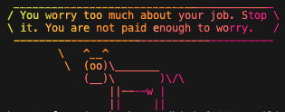

Information to remember
Bioinformatics environments
- We can create a virtual environment to define and manage different tools and their dependencies we need for our analyses, in order to keep the workflow reproducible.
- With environments, we can run the same analysis in different computers with different operating systems.
- It’s easier to create this than installing and loading every package in the specific version every time we want to reproduce some old result.
- Examples of environment managers are conda (bioconda for more biology related stuff) and Pixi, which we will use today.
- Pixi runs on all major operating systems, and allows to include multiple platforms within a single environment.
- It’s good to create an environment for every project.
Containers
- Another system that can help greatly with assuring reproducibility in our bioinformatics analyses is the use of containers. A container is a software that’s built with ‘images’ of all its content.
- They can be run on any computer and system, they contain everything needed to run an application.
- They include, apart from the packages and dependencies, the operating system.
- They require a container management tool to run a fully isolated system on top of the computer’s OS.
- The different with environment managers is that environments manage tools within our system, while containers package the entire system the tools run in.
- Examples: Docker, Apptainer, Podman.
- There are several public container images with established purposes. Common sites to download them are Dockerhub https://hub.docker.com/ (Docker) and Seqera https://seqera.io/containers/ (Docker or Singularity/Apptainer). Seqera also allows you to ‘make’ container images as you wish.
Note: This material was taken from the course’s webpage.
What we did today
Getting started with Pixi
On the second day of the course, we performed quality control exercises in RNA sequencing samples with different methods. First, we worked with Pixi, an environment manager. We logged into the course server and created a Pixi environment, where we added the conda-forge and bioconda channels:
pixi init -c conda-forge -c biocondaAfter running this, a new file named pixi.toml is created, where we can see all the packages loaded and their versions. And the pixi.lock file contains further information about where the packages where installed from, license information, etc. These shouldn’t be deleted or the environment will break.
Then, we added the dependencies we wanted, like quarto, with the command pixi add quarto. In order to run the tool we installed, we can run pixi run quarto, or “enter” the Pixi environment with pixi shell and then we can avoid the pixi run command every time.
QC exercise with Pixi
For the quality control exercise we practiced the use of screens, slurm and the environment in Pixi previously created. We did the quality control assessment with a tool called FastQC, which requires as input data in fastq, SAM or BAM formats and generates a .hyml report with a summary of the analysis for each sample in different aspects. We started by opening a screen. Opening a screen helps us run a process that may be longer without overloading our main terminal window, especially if we are working locally (then we can close the computer while the process is still running). To open a new screen:
screen -S nameThen, in my QC directory, I created sym links to the place where the actual sequencing fastq files were stored:
ln -s path/to/common_data/RNAseq/*fastq.gz .We added then the fastqc tool to our pixi environment. An in order to run the fastqc tool obtained with Pixi, we used SLURM, the job scheduling system. This way we can use the resources of a specific project instead of the login node, which doesn’t have a big computational power and many people use it at the same time. To run the tool we can use the following command:
pixi run srun -A hpc2n2025-203 -t 15:00 -n 1 fastqc --noextract -o fastqc data/sample_1.fastq.gz data/sample_2.fastq.gz where we first specify that the fastqc tool is within our Pixi environment, -A project_id, -t maximum running time, -n number_cores, ‘fastqc’ is our tool and the parameters that come afterwards are specific for it, like -o output directory and the samples (both directions) to be analyzed.
Alternatively we can write a script that runs the tool automatically in the background instead of occupying the screen or terminal and then run it with sbatch. These scripts have the following structure:
#! /bin/bash -l
#SBATCH -A hpc2n2025-203
#SBATCH -t 30:00
#SBATCH -n 1
pixi run fastqc -o ../fastqc --noextract ../data/*fastq.gzAnd I can run it with sbatch 'script'. After running fastqc for all samples, we ran multiqc multiqc 'fastqc_directory' 'output_directory', which summarises the output of the analysis of all the samples creating one single htlm report.
QC exercise with containers
We also tested the QC analysis using a container downloaded from Seqera with the fastqc tool instead of with Pixi. We ran this script with sbatch:
#! /bin/bash -l
#SBATCH -A hpc2n2025-203
#SBATCH -t 30:00
#SBATCH -n 1
apptainer exec -B ../data:/data ../../containers/fastqc_0.12.1--104d26ddd9519960.sif* fastqc -o ../fastqc_container --noextract ../data/*fastq.gzwhere the container had been previously downloaded into my containers folder. Then apptainer is called to execute the container which contains the fastqc tool, and we provide the parameters for it as before.
Building a container
If the software we want is not in a published container, we can build one as we want. Here we built a container with a cow that told us the date or a fortune phrase, as shown in the post’s picture. Our script lolcow.def that says a fortune phrase looks like this:
Bootstrap: docker
From: ubuntu:20.04
%post
apt-get -y update
apt-get -y install cowsay lolcat fortune
%environment
export LC_ALL=C
export PATH=/usr/games:$PATH
%runscript
fortune | cowsay | lolcat Then, to build the container we run apptainer build lolcow.sif lolcow.def and run it with apptainer run lolcow.sif. If we run instead apptainer exec lolcow.sif bash -c "date|cowsay, we get a date because with ‘exec’, the command we specify outside when running the container overrides the one inside. The cow speaks the truth sometimes.
